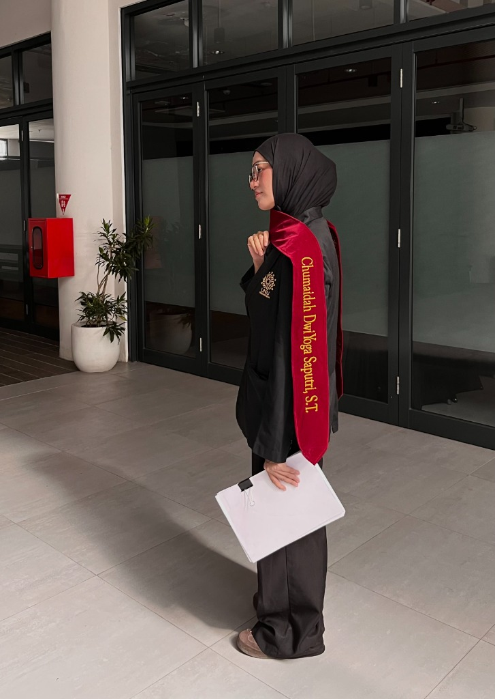

Fresh Graduate S1 Teknik Komputer
Hi, I'm Chumaidah Dwi Yoga Saputri
"Creating with Purpose, Growing with Curiosity."
Lulusan S1 Teknik Komputer dari Universitas Nahdlatul Ulama Yogyakarta. Memiliki kombinasi keahlian dalam perancangan antarmuka digital (UI/UX Design), pengembangan sistem IoT terintegrasi (perangkat keras & aplikasi web lokal), serta pengalaman solid dalam administrasi akademik dan koordinasi proyek.


Spesialisasi
IoT & UI/UX
IPK
3.78 / 4.00